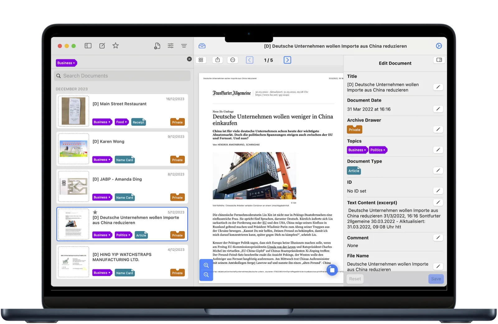
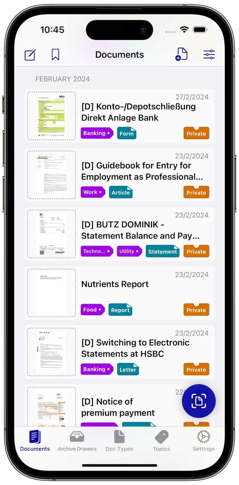
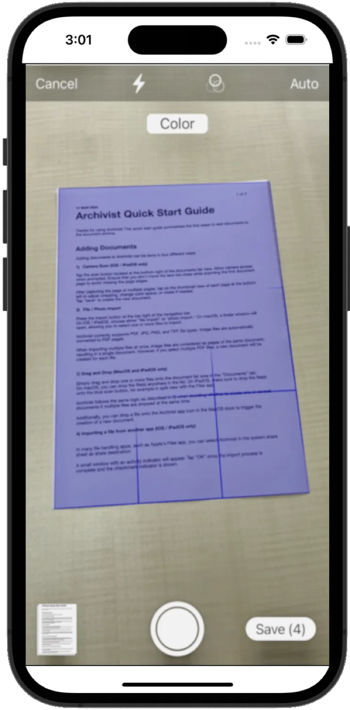
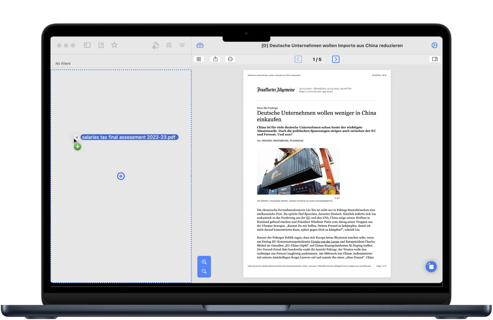
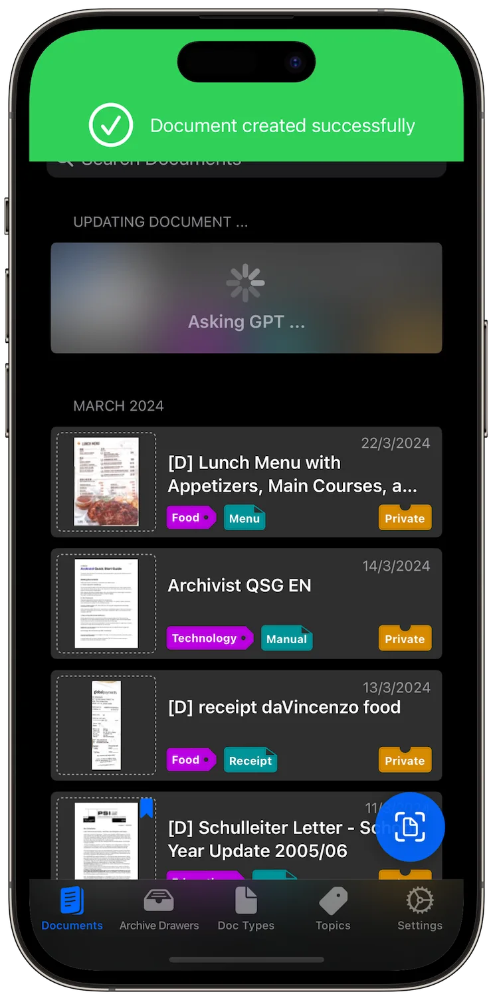
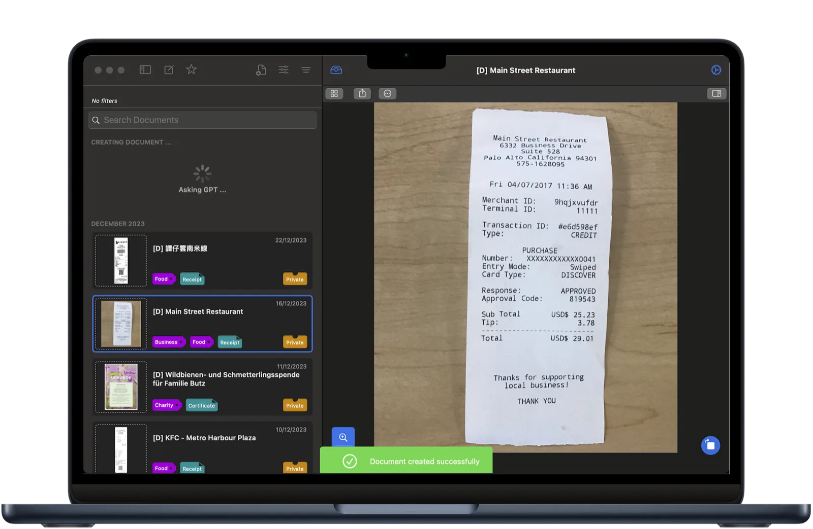

PDF editing
Add, move, rotate and delete pages.
Archivist archives your documents on iPhone, iPad and Mac. PDFs live in your iCloud Drive folder, document data in Apple’s CloudKit database. All you need is an iCloud account.
Free to try with up to 10 documents. No subscription. See how it works


Scan with your iPhone or iPad. Import files and photos. On your Mac, drag a file into the list.


Archivist supports PDF, JPG, PNG and TIFF files. You can also import from the share sheet in other apps.
Turn on AI document properties and Archivist fills in the title, document type, topics and correspondent. It is off by default. Use a remote AI provider, or let Apple Intelligence do the work on device on supported devices running iOS 26, iPadOS 26 or macOS 26. Every new user gets 10 tokens for remote AI detection.


Remote AI detection sends an excerpt of the document to the AI provider. Apple Intelligence runs on device. You decide whether to turn it on.
The tools you need to file, find and edit documents, without a subscription.
Add, move, rotate and delete pages.
Copy the document text to the clipboard.
Set the title, document type, topics and correspondent with a remote AI provider or Apple Intelligence.
Set topics and document types as Finder tags.
File letters, invoices and statements by sender, with an optional correspondent folder in iCloud Drive.
Scan a business card, then add the contact to your address book after a quick review.
Your PDFs stay in iCloud Drive in a simple folder structure: drawer, topic, correspondent, year. See the structure
No login. No subscription. No ads. No data mining. No data leaks. Yes, we’re serious.
Archivist does not lock your documents in a database. Every PDF is a normal file in iCloud Drive, in a folder structure you can read: drawer, topic, correspondent, year.
Correspondent folders are optional. Documents without a correspondent sit directly under the topic.
Open the same files in Finder, the Files app, or any PDF reader. Even without Archivist.
Document metadata lives in CloudKit. Your PDFs stay in iCloud Drive.
Free to try with up to 10 documents. No subscription.
Questions? support@archivist-app.com